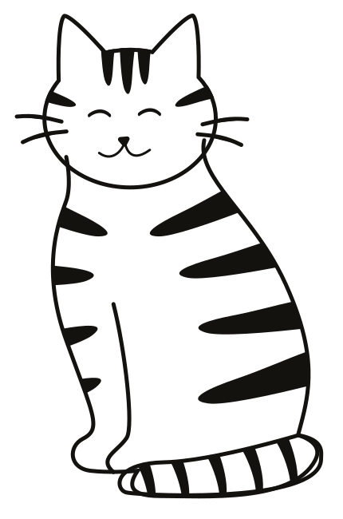

Furbrawl
Game design, art direction & UX/UI
A chaotic multiplayer brawler, starring cats.
Furbrawl is a fast-paced multiplayer fighting game developed in university during the Videogame Design and Programming course. Our team consisted of three programmers and myself as team leader, overseeing game design, art, and UX/UI. It was my first experience working on a game from start to finish, and we completed the entire project in three months.
Role
Team Leader, Game Artist, UI/UX Designer
Scope
University project · 2021 original, 2024 redesign
Read time
3 minutes
{{ s.kicker }}
{{ s.title }}
{{ s.body }}
{{ s.body2 }}
Playtest clip
Allega il file video in chat e lo inserisco qui io.
How might we
{{ s.hmw }}
{{ f.name }}
{{ f.note }}
Takeaways
What I took away from it.
Furbrawl taught me:
- How to lead and collaborate remotely
- How to communicate design ideas with developers clearly and effectively
- The value of being flexible and letting go of ideas that don't serve the bigger picture
- How crucial UI truly is, a lesson that became even more clear during the redesign
Looking back, I realize how much I grew through this project, both creatively and professionally.
Play it on itch.io →